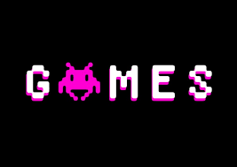

Alvarado Ortega Mitzuoh Rafael Grupo 4IV9
Datos Generales
Nombre : Mitzuoh Rafael Alvarado Ortega
Edad : 16 años
Correo Electrónico : malvaradoo1900@alumno.ipn.mx
NSS : 23985609501
Estudios Realizados
Escuela Secundaria : #148 Lao-Tse del año 2017 al 2019
Escuela Media Superior : Cecyt 14 "Luis Enrique Erro" y actualmente en el Cecyt 9 "Juan de Dios Bátiz" del 2019 y estudio Programación
Taller o Carrera Técnica : Secundaria (Electronica), Cecyt 14 "Técnico en Informática"
Logros : Quedarme en el IPN, y después de 3 intentos quedarme en el Cecyt 9
Cursos, Certificaciones o Diplomas
Tuve curso de Ingles conocido como CELEX pero no me dieron nada por la pandemia
Mi certificado de la Secundaria, fue cuando salí
Hobbies
Platicar con mis amigos por chat de texto
Escuchar música, me gusta escuhar de todo un poco
Antes me gustaba mucho salir a jugar Basquetball con mis amigos de la escuela
Ver videos
Me encantan los videojuegos

Habilidades
Soy Creativo al mometo de hacer una actividad de diseño
Conocimiento del juego de Ajedrez
Positivo ante situaciones no favorables